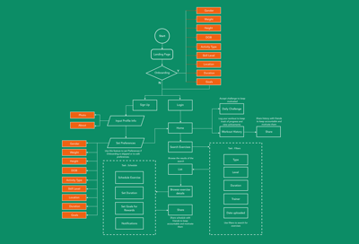
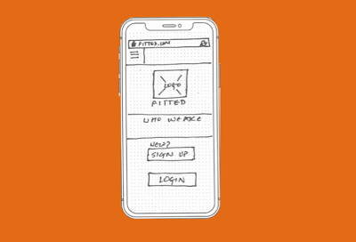
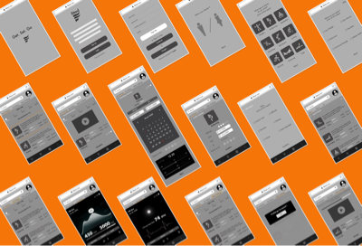
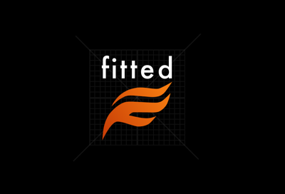
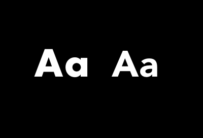
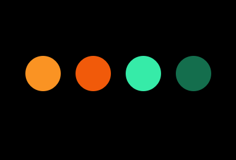
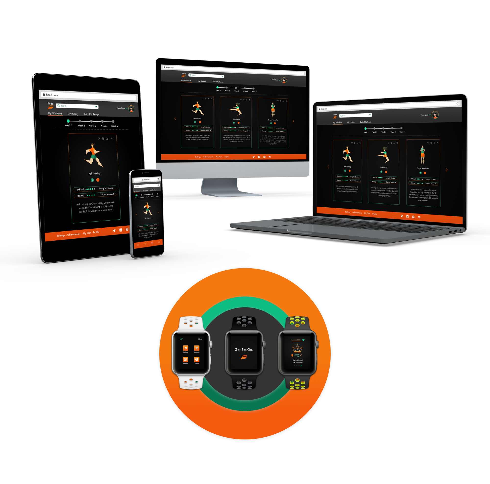

Process
User Flow & Sketches
 {kind=link}
{kind=link}
For user flow, I kept track of what exactly a beginner would need from a customized app that was user friendly. Typical patterns from a perspective of an engaging fitness app involve good onboarding, multiple levels and options for exercises, a gaming and social aspect to keep the user motivated.
Low Fidelity Wireframes
{kind=link}
{kind=link}
{kind=link}
Logo
The logo for fitted is a stylized take on the letter 'F'. The use of primary or secondary colors is meant to gather attention to the brand.
Typography
The primary typeface, Futura has an appearance of efficiency and forwardness and uses simple geometric forms: near-perfect circles, triangles and squares. It is also easy to read from a distance. Avenir, an organic interpretation of the geometric style, even in color and suitable for extended text is used for body copy and accents or moments of discovery.
Color
Since boldness was a big theme with the design, I used a complementary set of lively colors from the moodboards. These choices signify activity, positivity, peace and change.
  {kind=link}
{kind=link}
{kind=link}
{kind=link}
{kind=link}
{kind=link}
{kind=link}
{kind=link}
{kind=link}
{kind=link}
{kind=link}
Responsive
I approached the design process with a Mobile first strategy, but the idea of Fitted is of an app that can handle multiple screen sizes well, so responsive and wearable design were constant aspects of the creative process.
Interactions & Gestures
Interactivity and motion exploration were high priority for the design of this app.


Animation
Onboarding
Fitted has an extensive, fun and interactive onboarding section that collects relevant information to personalize user experience. This section also offers a glimpse all the features that the app provides. The user can opt out of onboarding at any point in the process.
Scheduling
Users can search for exercises based on keywords and explore the exercise in detail on the Info page for a Step by Step breakdown. Users can then proceed to schedule their desired sessions easily by using the calendar to set up a workout plan.
Step By Step Instructions
Users can get a detailed breakdown of the steps involved in an exercise by using the Info button on the Exercise screens.
-->